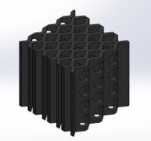
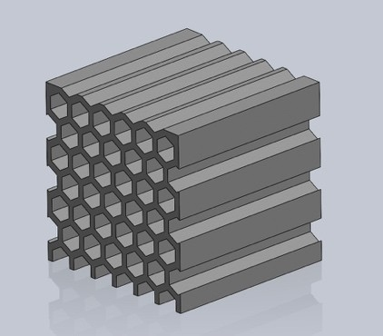
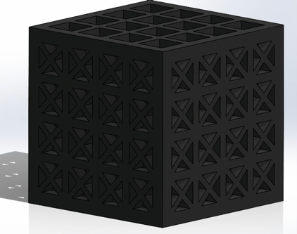
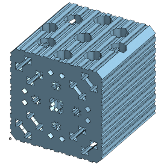
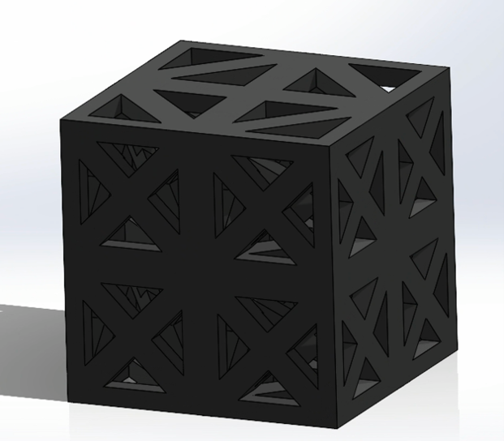

APSC 200
Volleyball Knee Pad
As a group, we were tasked with designing a volleyball knee pad with an internal rubber microstructure to reduce knee injuries caused by impact forces and rapid changes in direction during gameplay. Objectives also included an effective design for female bodies and the ability to dissipate 15 percent of 2,000-newton impact forces. Tests included shear, lateral tension and compression, and vertical compression under 2,000-newton and 4,000-newton forces. The final lattice-structure implements diagonal beams on each face of the structure to protect the product from damage caused by shear forces. The predicted porosity was 50 percent to improve breathability.
Inner Structure Layout — Design Iterations




Final Design
